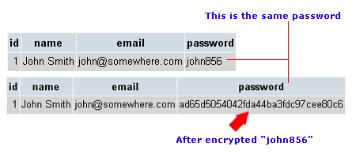

- The process of encryption of passwords is complex, which makes the prediction of a plain text just by having the encrypted hash impossible.
- The plain text goes through multiple mathematic algorithms which create an encrypted, unreadable hash.
- Looking at the photo below, you have 2 examples of a data base. Above is an example of a data base which does not encrypt your password, which puts your password at great risk if anyone, even the owner of the website, sees your password, especially if you use it on multiple websites. Below, we have a database that encrypts your password in MD5. You can see how the plain text "john856" became a long, unreadable and encrypted hash.

Try it yourself! Encrypt a message in SHA256. Write something in the "Message" text area, and you will receive an output with the encrypted message.